STAFF吉米·麦克纳尔蒂Jimmy McNulty
STAFF吉米·麦克纳尔蒂Jimmy McNulty曾以球员身份帮助帽匠升级，2026年回归担任主教练，此前率罗奇代尔重返EFL。
STOCKPORT COUNTY · 2026/27
2026/27赛季 · 一线队、教练团队与外租球员
STAFF吉米·麦克纳尔蒂Jimmy McNulty曾以球员身份帮助帽匠升级，2026年回归担任主教练，此前率罗奇代尔重返EFL。
 STAFF杰森·泰勒Jason Taylor
STAFF杰森·泰勒Jason Taylor现任助理主教练，与主教练共同支持一线队训练和比赛准备。
 STAFF马蒂·多恩Matty Done
STAFF马蒂·多恩Matty Done现任一线队教练，参与球队训练、球员发展和赛前准备。
一线队教练团队成员，官方团队页面将其列为一线队助理战术教练。
 STAFF本·欣奇利夫Ben Hinchliffe
STAFF本·欣奇利夫Ben Hinchliffe帽匠传奇门将，十年球员生涯出场427次、赢得三座联赛冠军，现为门将教练团队成员。
现任运动表现主管，属于球队连接训练、体能与比赛表现的专业支持团队。
 STAFF马特·詹森Matt Jansen
STAFF马特·詹森Matt Jansen帽匠一线队支持团队成员，参与球员支持，并在官方团队页面列有终结训练教练职责。
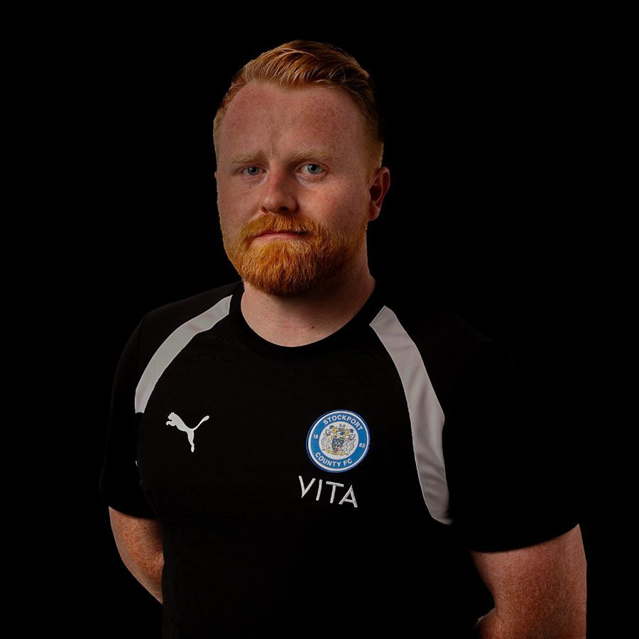
STAFF约翰·香农John Shannon现任战术分析教练，结合比赛影像与数据，为训练和比赛准备提供支持。
 1奥利·沃特马夫Ollie Whatmuff
1奥利·沃特马夫Ollie Whatmuff从曼城租借加盟的年轻门将，曾在温布利扑出两粒点球，帮助罗奇代尔完成升级。
 26卢卡·阿什比-哈蒙德Luca Ashby-Hammond
26卢卡·阿什比-哈蒙德Luca Ashby-Hammond富勒姆青训出身的门将，2026年重返埃奇利公园，为门将组带来持球能力和联赛经验。
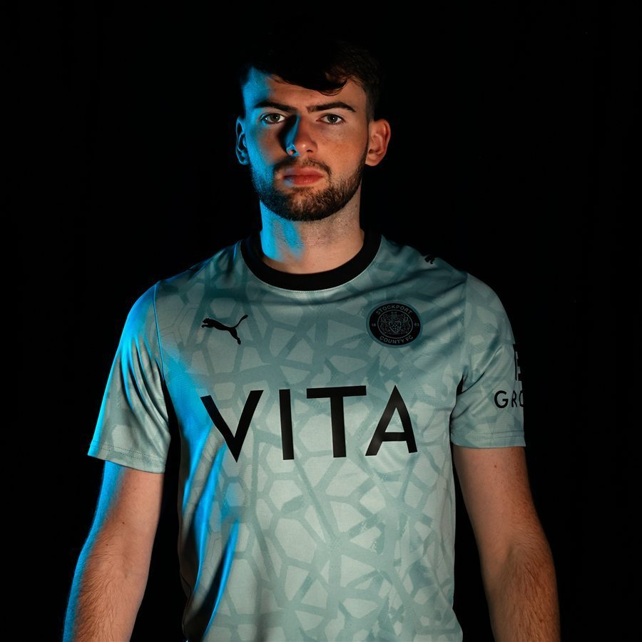
32安德鲁·沃根Andrew Wogan来自爱尔兰的年轻门将，曾随德罗赫达联夺得爱尔兰足协杯，并代表爱尔兰青年队出场。
 科里·阿代Corey Addai
科里·阿代Corey Addai曾帮助克劳利在温布利完成升级的门将，现外租伯顿阿尔比恩，继续征战英甲。
 2乔什·戴克斯-科格利Josh Dacres-Cogley
2乔什·戴克斯-科格利Josh Dacres-Cogley能胜任右后卫和右翼卫的边路球员，2026年从博尔顿加盟，兼具防守经验与前插能力。
 5伊桑·派伊Ethan Pye
5伊桑·派伊Ethan Pye从外租锻炼成长为后防主力的左脚后卫，曾在英甲首季包揽俱乐部三项年度球员奖。
 6伊奥恩·奥康奈尔Eoghan O'Connell
6伊奥恩·奥康奈尔Eoghan O'Connell经历凯尔特人青训及雷克瑟姆连续升级的爱尔兰中卫，为后防线带来组织和争顶能力。
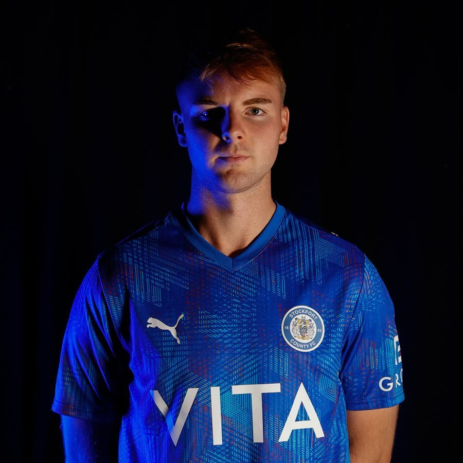
12汤姆·威尔逊-布朗Tom Wilson-Brown莱斯特城青训培养的多面后卫，可出任中卫或左后卫，2026年签约加盟帽匠。
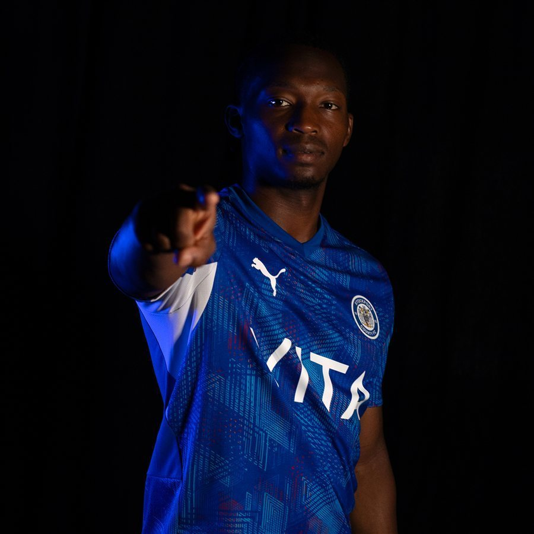
14塔约·埃敦Tayo Edun富勒姆青训出身的进攻型边后卫，拥有英冠和英甲经验，能够承担左路攻守任务。
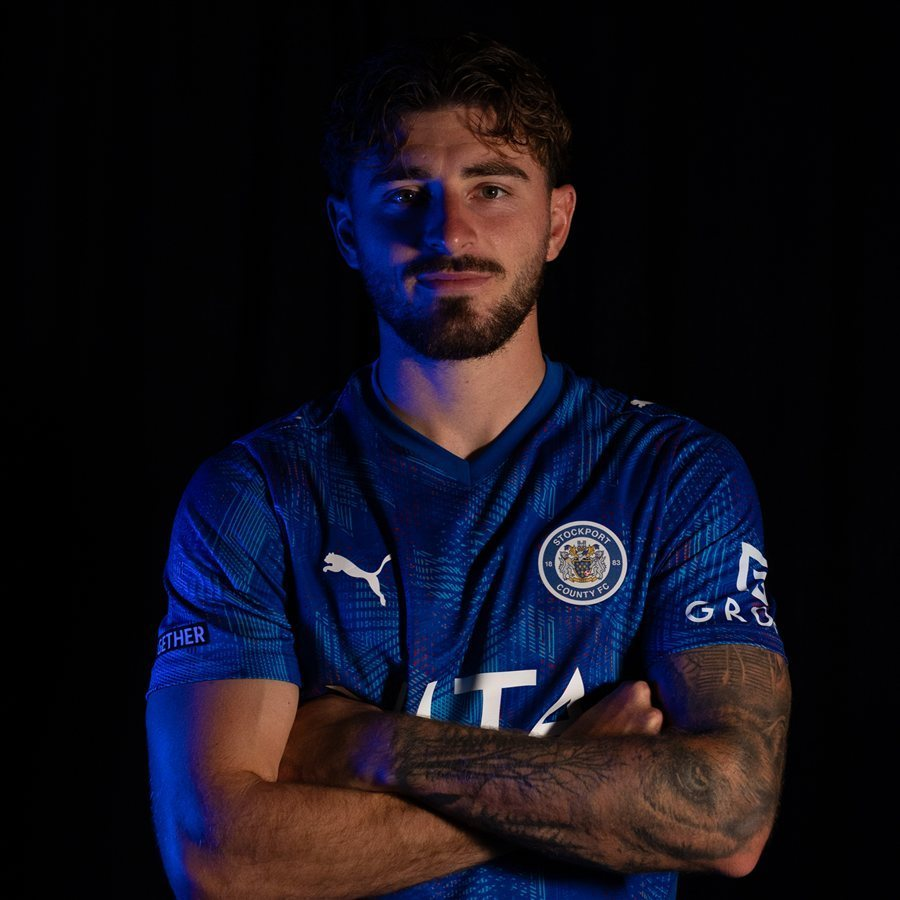
17瑞安·赖德尔Ryan Rydel长期效力帽匠的左路多面手，参与球队重返EFL的征程，传中和助攻是其鲜明特点。
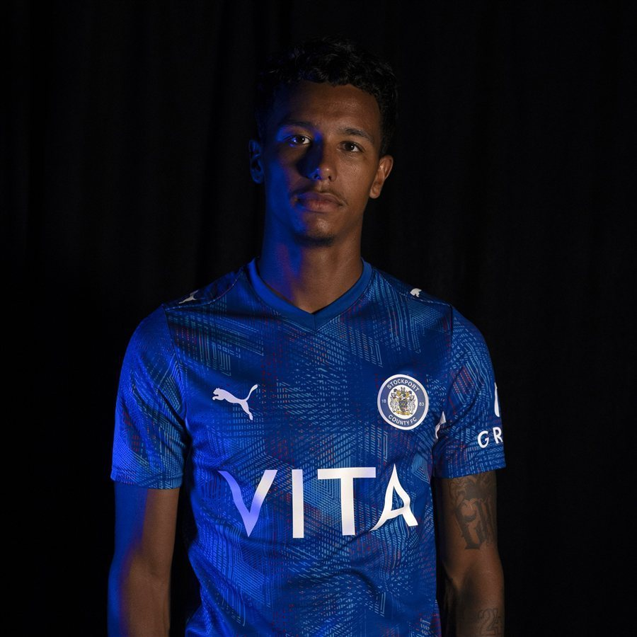
24凯龙·戈登Kyron Gordon从罗奇代尔加盟的后卫，曾担任该队副队长，并在2025/26赛季帮助球队升级。
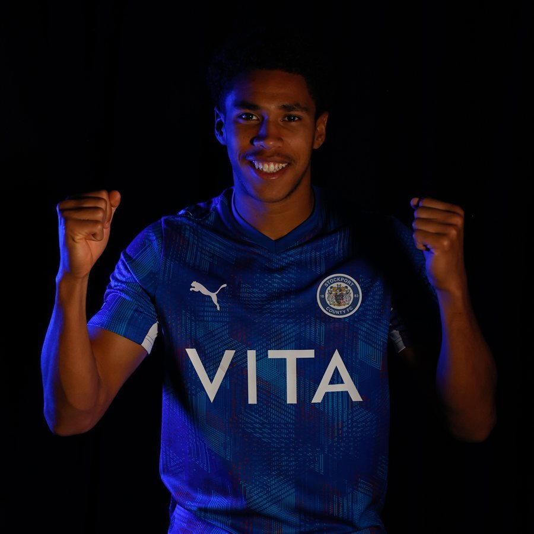
25马马杜·乔布Mamadou Jobe从剑桥联加盟的年轻中卫，兼具运动能力与持球冷静度，2026年成为帽匠后防新成员。
能够兼顾防线与中场的多面手，曾在科尔切斯特三中卫体系中发挥作用，2024年加盟帽匠。
 33布拉德·希尔斯Brad Hills
33布拉德·希尔斯Brad Hills在租借期间迅速赢得位置的中卫，与派伊搭档成长，随后正式转会并长期签约。
 3欧文·多格森Owen Dodgson
3欧文·多格森Owen Dodgson可出任左后卫和左翼卫的后场球员，正式加盟帽匠后，于2026/27赛季外租曼斯菲尔德。
 4刘易斯·贝特Lewis Bate
4刘易斯·贝特Lewis Bate切尔西青训出身的技术型中场，善于从后场组织推进，2024年从利兹联加盟帽匠。
 10奥利弗·诺伍德Oliver Norwood
10奥利弗·诺伍德Oliver Norwood现任球队队长，拥有多次英冠升级和英超经历，是帽匠中场经验与组织能力的重要来源。
 16哈里·伍德Harry Wood
16哈里·伍德Harry Wood从谢尔伯恩加盟的创造型中场，曾打进决定爱尔兰联赛冠军归属的进球。
 18刘易斯·菲奥里尼Lewis Fiorini
18刘易斯·菲奥里尼Lewis Fiorini曼城青训培养的进攻型中场，曾在荷兰和英格兰多级联赛锻炼，并代表苏格兰U21出场。
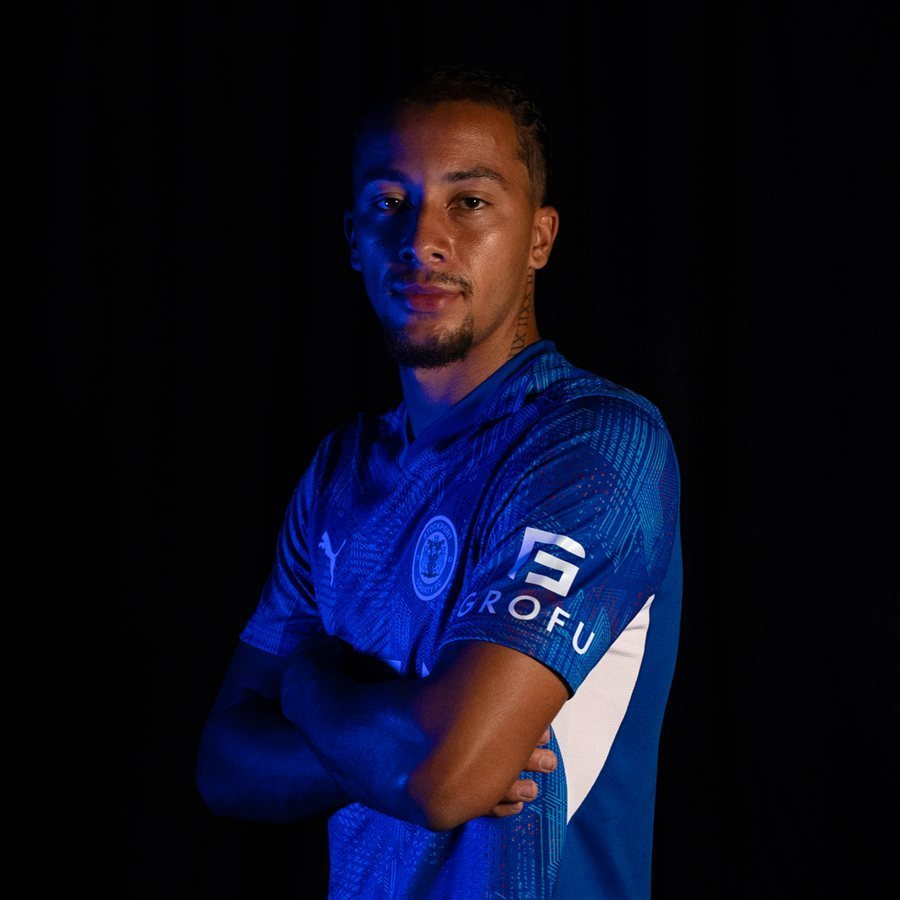
20杰森·阿迪贡Jason Adigun查尔顿青训出身的中场新援，兼具运动能力与控球技术，2026年加入帽匠。
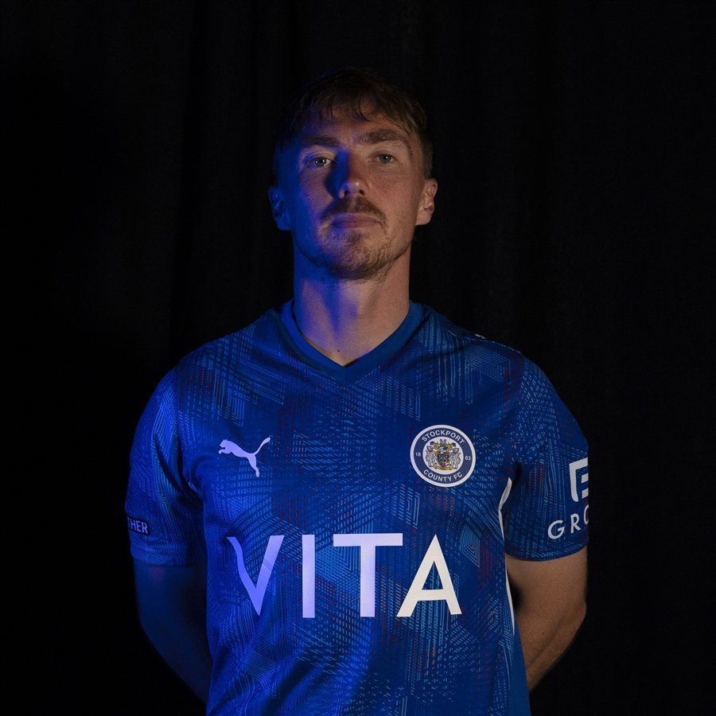
23本·奥斯本Ben Osborn具有丰富英超和英冠经验的多面手，可覆盖中场、左后卫及左翼卫。
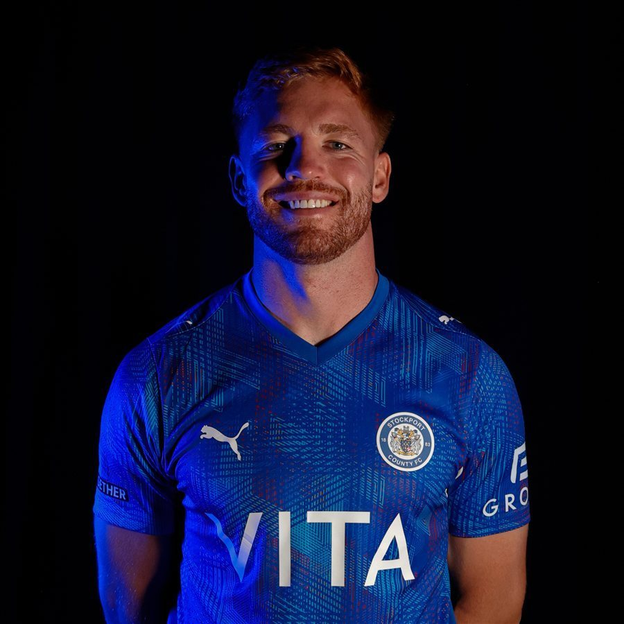
8卡勒姆·坎普斯Callum Camps斯托克波特本地出身的经验型中场，参与英乙夺冠，现以租借形式效力卡莱尔联。
 21欧文·莫克森Owen Moxon
21欧文·莫克森Owen Moxon具备推进、长传及定位球能力的全能中场，曾连续两个赛季完成升级，现外租剑桥联。
 7杰克·戴蒙德Jack Diamond
7杰克·戴蒙德Jack Diamond桑德兰青训出身的边路攻击手，拥有温布利升级进球和EFL锦标赛冠军经历。
 9贝诺尼·安德烈松Benoný Andrésson
9贝诺尼·安德烈松Benoný Andrésson来自冰岛的年轻射手，凭借本土联赛的高效进球表现来到帽匠，并迅速收获关键进球。
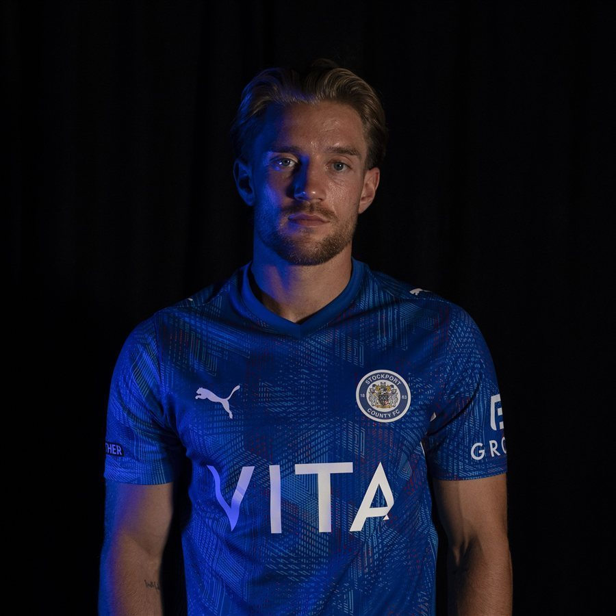
15瑞安·格洛弗Ryan Glover从巴尼特加盟的勤勉型边锋，连续两个赛季获评该队年度最佳球员，能覆盖多个边路角色。
 19凯尔·伍顿Kyle Wootton
19凯尔·伍顿Kyle Wootton帽匠锋线的高大支点，兼具背身串联与禁区终结能力，参与球队英乙夺冠征程。
 22米凯尔·曼德龙Mikaël Mandron
22米凯尔·曼德龙Mikaël Mandron拥有英格兰和苏格兰联赛经历的法国中锋，擅长争顶、背身配合和带动队友。
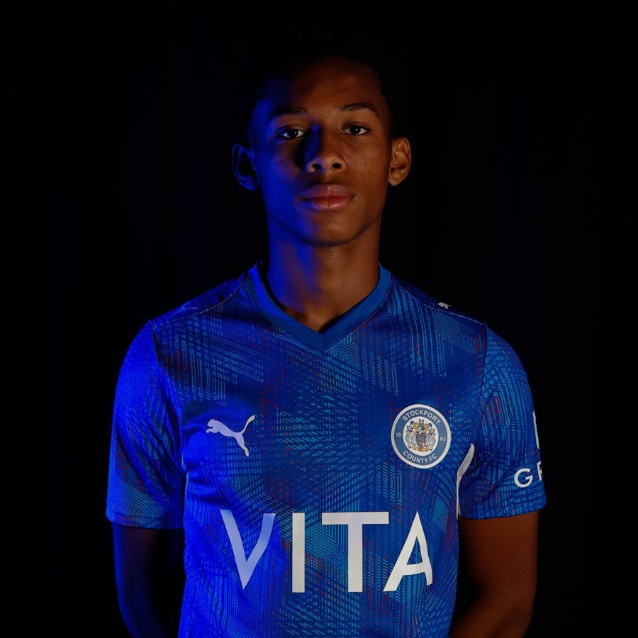
28谢伊·加德纳Che Gardner帽匠青训培养的年轻边锋，2024年完成职业首秀，并在同年签下首份职业合同。
 29阿达马·西迪贝Adama Sidibeh
29阿达马·西迪贝Adama Sidibeh从当地非职业联赛走向苏格兰及国家队的冈比亚前锋，以速度和冲击力见长。
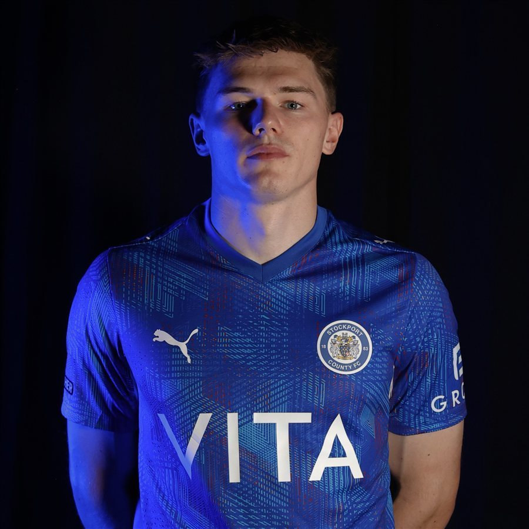
30伊桑·恩尼斯Ethan Ennis经历利物浦与曼联青训的攻击手，2026年正式加盟，能够覆盖前场多个位置。
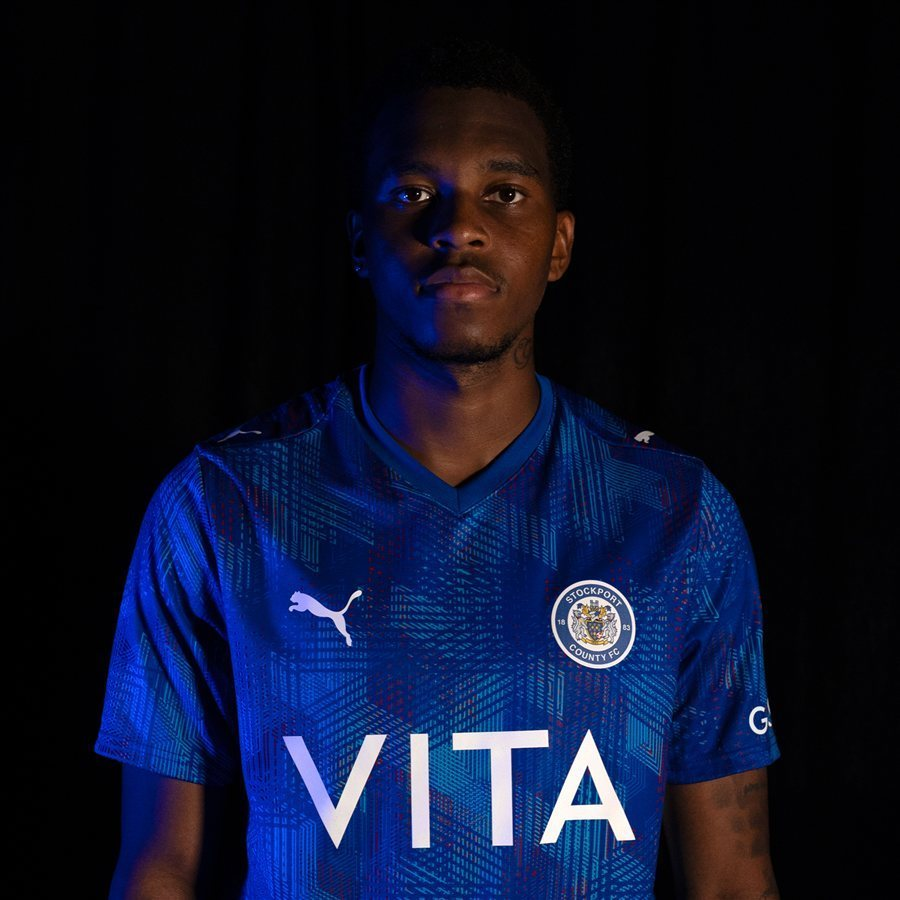
11马利克·莫瑟西尔Malik Mothersille牙买加国脚攻击手，可出任前锋、边路及前腰，2026/27赛季外租威科姆流浪者。